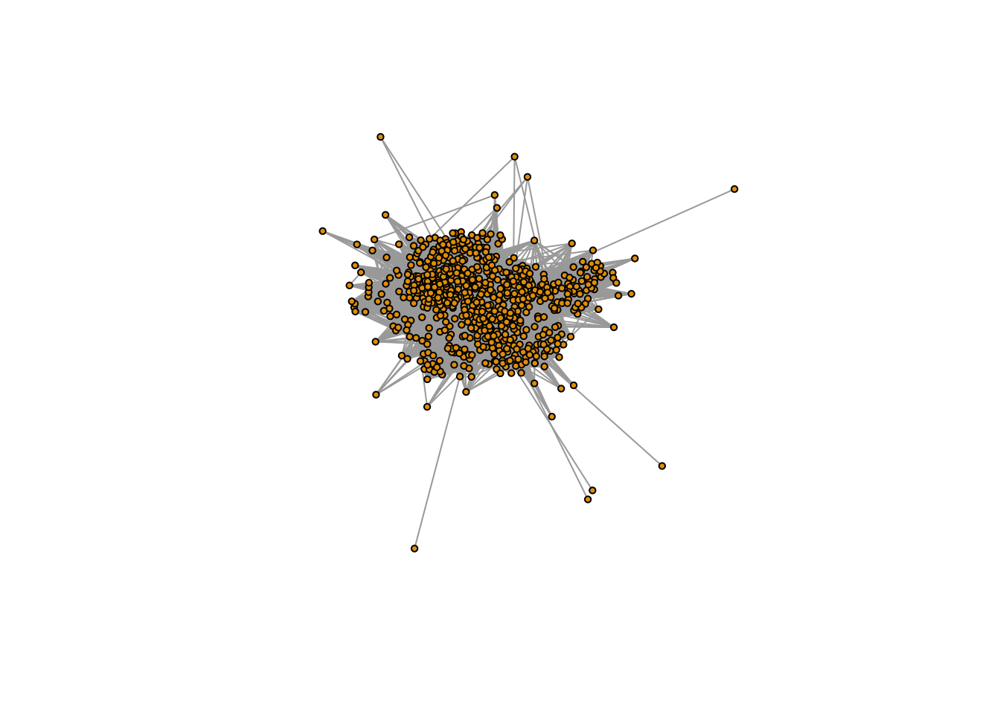
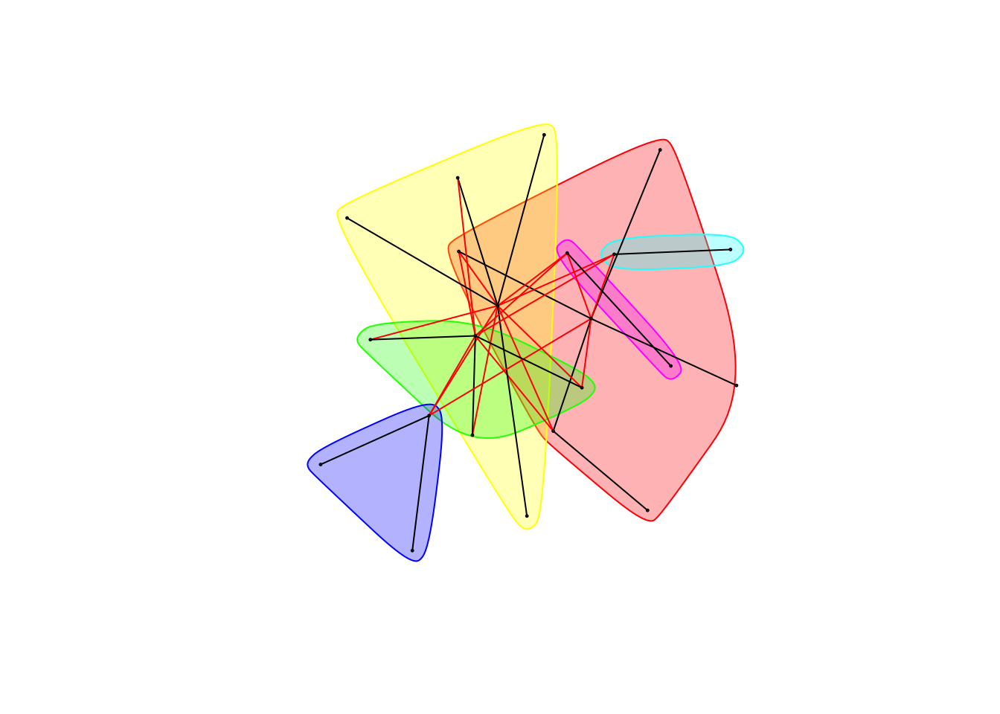
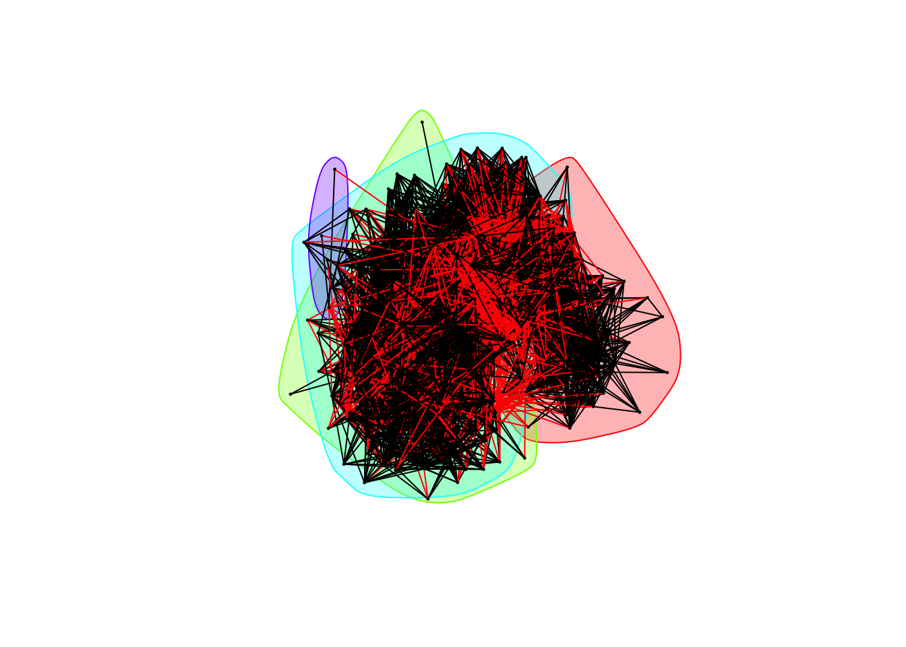
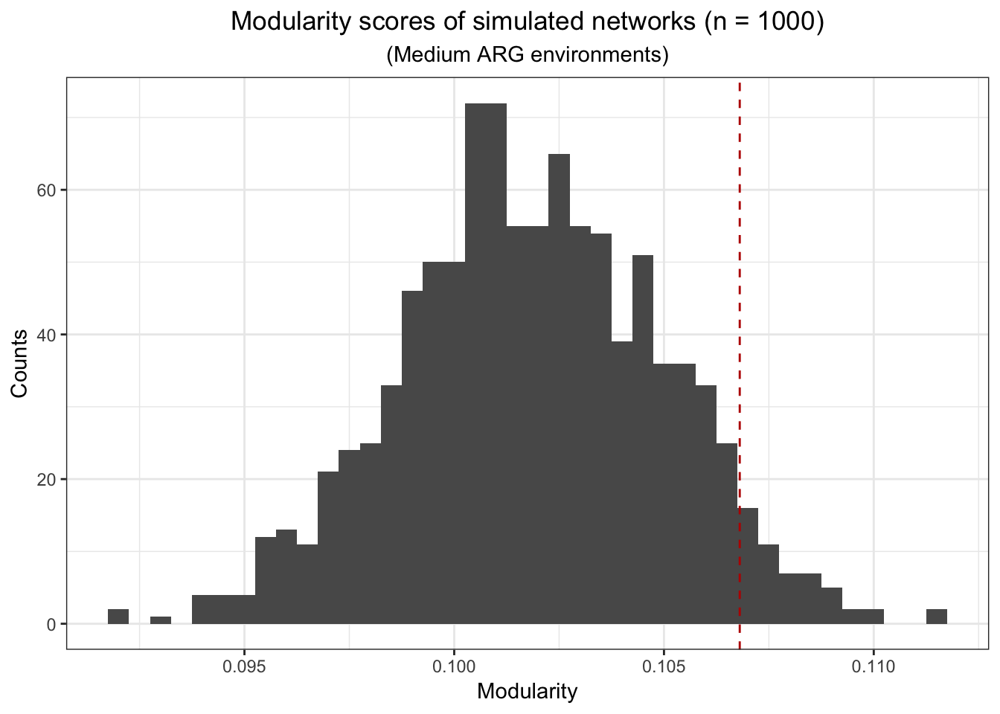
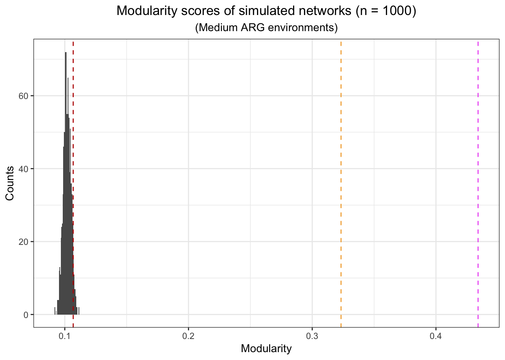
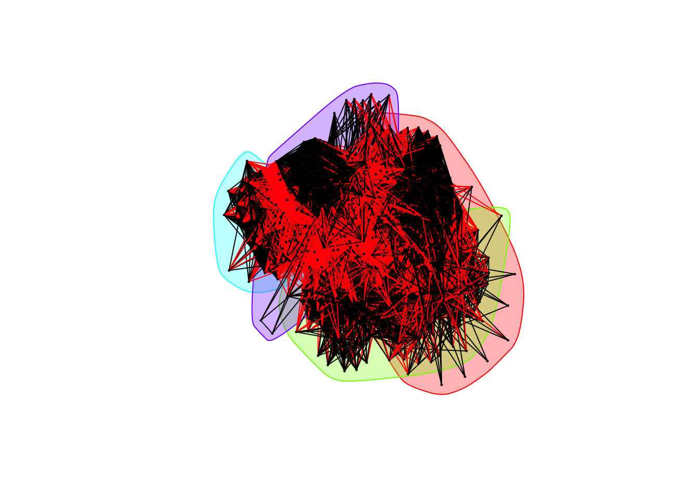
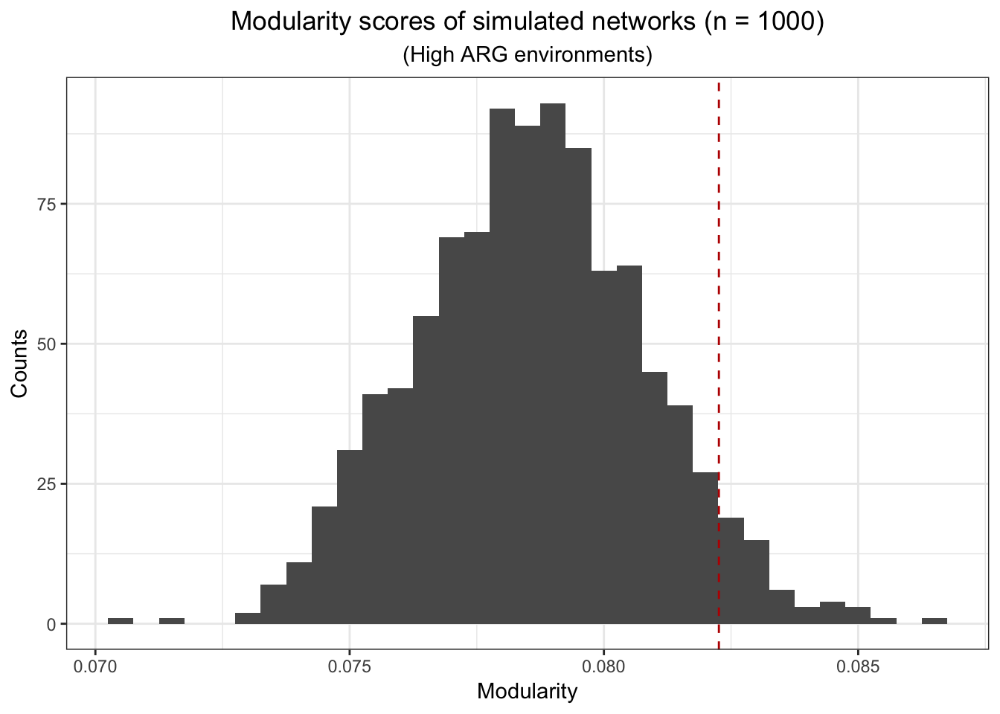

Data Exploration
library(data.table, warn.conflicts = FALSE)
library(igraph, warn.conflicts = FALSE)
library(ggplot2, warn.conflicts = FALSE)Whole data set
biome_info <- read.table("data/raw/arg_all/arg_datasets.biomes.tsv", sep = "\t", header = TRUE,
col.names = c("counts", "biome"))
ggplot(data.frame(biome_info), aes(x = biome, y = counts)) + geom_bar(stat = "identity") +
labs(x = element_blank(), y = element_blank(), title = "Biome counts: All datasets (n = 7848)") +
theme(plot.title = element_text(hjust = 0.5), plot.subtitle = element_text(hjust = 0.5),
axis.text.x = element_text(angle = 90, hjust = 1))env_info <- read.table("data/raw/arg_all/arg_datasets.envs.tsv", sep = "\t", header = TRUE,
col.names = c("counts", "environment"))
ggplot(data.frame(env_info), aes(x = environment, y = counts)) + geom_bar(stat = "identity") +
labs(x = element_blank(), y = element_blank(), title = "Environment counts: All datasets (n = 7848)") +
theme(plot.title = element_text(hjust = 0.5), plot.subtitle = element_text(hjust = 0.5),
axis.text.x = element_text(angle = 90, hjust = 1))Subset
arg_subset_info <- read.table("data/raw/arg_subsets/arg_datasets.subset.tsv", sep = "\t", header = TRUE)
head(arg_subset_info)## id biome feature
## 1 4440026 animal-associated habitat animal-associated habitat
## 2 4440036 marine habitat marine habitat
## 3 4440037 marine habitat marine habitat
## 4 4440038 marine habitat marine habitat
## 5 4440039 marine habitat marine habitat
## 6 4440040 marine habitat marine habitat
## material environment_package
## 1 animal-associated habitat human-associated
## 2 marine habitat water
## 3 marine habitat water
## 4 marine habitat water
## 5 marine habitat water
## 6 marine habitat water
## location
## 1 Adult cystic fibrosis Clinic at the University of California San Diego Medical Center
## 2 Kingman Atoll
## 3 Kingman Atoll
## 4 Christmas (Kiritimati) Atoll
## 5 Palmyra Atoll
## 6 Palmyra Atoll
## seq_counts rel_seq_count arg_percent
## 1 50909 4 7.857157e-05
## 2 94915 0 0.000000e+00
## 3 188445 0 0.000000e+00
## 4 283390 0 0.000000e+00
## 5 351205 1 2.847340e-06
## 6 358983 8 2.228518e-05proportion = 0.1
cutoff = quantile((sort(arg_subset_info$arg_percent)), 1 - proportion)ggplot(data.frame(val = arg_subset_info$arg_percent), aes(val)) + geom_histogram(binwidth = 0.001) +
labs(x = "ARG Percentage", y = "Count", title = "ARG proportion counts (n = 934)") +
theme(plot.title = element_text(hjust = 0.5)) +
geom_vline(xintercept = 4.545e-04, colour = "#a9f9cd", linetype = "dashed") +
geom_vline(xintercept = cutoff, colour = "#BB0000", linetype = "dashed")  ## Cooccurrence Data
## Cooccurrence Data
arg_cooccurrence.tsv contains the cooccurrence data (ie, Spearman’ correlation) for all the ARGs found in arg_datasets.subset.tsv.
arg_cooccurrence_table <- read.table("data/raw/cooccurrences/arg_cooccurrence.tsv",
col.names = c("ARG_1", "ARG_2", "rho", "p"))
head(arg_cooccurrence_table)## ARG_1
## 1 gb.DQ212986.+.2258-2966.ARO:3002926.vanRG
## 2 gb.DQ212986.+.2258-2966.ARO:3002926.vanRG
## 3 gb.DQ212986.+.2258-2966.ARO:3002926.vanRG
## 4 gb.DQ212986.+.2258-2966.ARO:3002926.vanRG
## 5 gb.DQ212986.+.2258-2966.ARO:3002926.vanRG
## 6 gb.DQ212986.+.2258-2966.ARO:3002926.vanRG
## ARG_2 rho p
## 1 gb.EU999036.+.688-1390.ARO:3002934.vanSD 0.2387160 1.48040e-13
## 2 gb.KU302801.+.102199-102430.ARO:3002831.vgaC 0.1696780 1.85089e-07
## 3 gb.L36601.+.1420-3130.ARO:3003036.oleB 0.1151190 4.26178e-04
## 4 gb.NC_009632.+.49744-50476.ARO:3000347.ErmA 0.0900387 5.92078e-03
## 5 gb.NC_000913.3.+.3219493-3220873.ARO:3000024.patA 0.1387860 2.09839e-05
## 6 gb.AP009048.1.-.4303042-4304509.ARO:3003550.mdtP 0.1432250 1.12507e-05Since all the cooccurrence values we have here are significant - that is, with \(p < 0.05\) - we will remove the \(p\) value column from arg-cooccurrence_table:
arg_cooccurrence_table <- arg_cooccurrence_table[, -4]
head(arg_cooccurrence_table)## ARG_1
## 1 gb.DQ212986.+.2258-2966.ARO:3002926.vanRG
## 2 gb.DQ212986.+.2258-2966.ARO:3002926.vanRG
## 3 gb.DQ212986.+.2258-2966.ARO:3002926.vanRG
## 4 gb.DQ212986.+.2258-2966.ARO:3002926.vanRG
## 5 gb.DQ212986.+.2258-2966.ARO:3002926.vanRG
## 6 gb.DQ212986.+.2258-2966.ARO:3002926.vanRG
## ARG_2 rho
## 1 gb.EU999036.+.688-1390.ARO:3002934.vanSD 0.2387160
## 2 gb.KU302801.+.102199-102430.ARO:3002831.vgaC 0.1696780
## 3 gb.L36601.+.1420-3130.ARO:3003036.oleB 0.1151190
## 4 gb.NC_009632.+.49744-50476.ARO:3000347.ErmA 0.0900387
## 5 gb.NC_000913.3.+.3219493-3220873.ARO:3000024.patA 0.1387860
## 6 gb.AP009048.1.-.4303042-4304509.ARO:3003550.mdtP 0.1432250Graph Analysis
We begin our network analysis of the ARG cooccurrence by separating arg_cooccurrence_table by positive and negative values and then:
- Finding the optimal community structure of each observed network
- Generating mock community structure of each network and recording the modularity of each mock community structure, as well as which ARGs are the most central
- Comparing the modularity of the observed network against the distribution of the mock communities to determine statistical significance
positive_arg_cooccurrence <- arg_cooccurrence_table[arg_cooccurrence_table[['rho']] > 0, ]
gr_pos_cooccurrence <- graph.data.frame(positive_arg_cooccurrence, directed = FALSE)
negative_arg_cooccurrence <- arg_cooccurrence_table[arg_cooccurrence_table[['rho']] < 0, ]
gr_neg_cooccurrence <- graph.data.frame(positive_arg_cooccurrence, directed = FALSE)We’ll now
plot(gr_pos_cooccurrence, vertex.size = 3, vertex.label = NA)
Finding communities. Beginning with greedy optimization to get big picture.
show_community_info <- function(graph_object){
communities_object <- cluster_fast_greedy(graph_object, weights = E(graph_object)$rho)
hot_otus <- vector
for (community in communities(communities_object)){
sub_graph <- induced.subgraph(graph = graph_object,
v = community, impl = "auto")
highest_degree_otu <- V(sub_graph)[which.max(degree(sub_graph))]$name
hot_otus <- c(hot_otus, highest_degree_otu)
print(paste("Highest degree OTU was", highest_degree_otu, "(degree =",
degree(sub_graph, highest_degree_otu), "):"))
}
plot(communities_object, graph_object,
layout = layout.lgl,
rescaled = TRUE,
vertex.size = ifelse(V(graph_object) %in% hot_otus, 5, 1),
vertex.label = ifelse(V(graph_object) %in% hot_otus, V(graph_object)$id, NA),
vertex.label.cex = 2
)
modularity(graph_object, membership(communities_object))
}Low ARG percentage
low.arg_subset_info <- read.table("data/raw/arg_subsets/arg_datasets.subset.low.tsv", sep = "\t", header = TRUE)
ggplot(data.frame(low.arg_subset_info), aes(biome)) + geom_bar() +
labs(x = element_blank(), y = element_blank(), title = "Biome counts: Low ARG Prevalence (n = 700)") +
theme(plot.title = element_text(hjust = 0.5), plot.subtitle = element_text(hjust = 0.5),
axis.text.x = element_text(angle = 45, hjust = 1))ggplot(data.frame(low.arg_subset_info), aes(environment_package)) + geom_bar() +
labs(x = element_blank(), y = element_blank(), title = "Environment counts: Low ARG Prevalence (n = 700)") +
theme(plot.title = element_text(hjust = 0.5), plot.subtitle = element_text(hjust = 0.5),
axis.text.x = element_text(angle = 45, hjust = 1))
arg_cooccurrence.low <- read.table("data/raw/cooccurrences/arg_cooccurrence.low.tsv",
col.names = c("ARG_1", "ARG_2", "rho", "p"))
arg_cooccurrence.low <- arg_cooccurrence.low[, -4]
head(arg_cooccurrence.low)## ARG_1
## 1 gb.DQ212986.+.2258-2966.ARO:3002926.vanRG
## 2 gb.DQ212986.+.2258-2966.ARO:3002926.vanRG
## 3 gb.DQ212986.+.2258-2966.ARO:3002926.vanRG
## 4 gb.DQ212986.+.2258-2966.ARO:3002926.vanRG
## 5 gb.DQ212986.+.2258-2966.ARO:3002926.vanRG
## 6 gb.DQ212986.+.2258-2966.ARO:3002926.vanRG
## ARG_2 rho
## 1 gb.EU999036.+.688-1390.ARO:3002934.vanSD 0.296494
## 2 gb.KU302801.+.102199-102430.ARO:3002831.vgaC 0.451926
## 3 gb.L36601.+.1420-3130.ARO:3003036.oleB 0.146602
## 4 gb.NC_009632.+.49744-50476.ARO:3000347.ErmA 0.209047
## 5 gb.NC_000913.3.+.3219493-3220873.ARO:3000024.patA 0.239408
## 6 gb.AP009048.1.-.4303042-4304509.ARO:3003550.mdtP 0.413613low.pos_cooccurrence <- arg_cooccurrence.low[arg_cooccurrence.low[['rho']] > 0, ]
low.positive_graph <- graph.data.frame(low.pos_cooccurrence, directed = FALSE)
low.neg_cooccurrence <- arg_cooccurrence.low[arg_cooccurrence.low[['rho']] <= 0, ]
low.neg_cooccurrence[[3]] <- abs(low.neg_cooccurrence[[3]])
low.negative_graph <- graph.data.frame(low.neg_cooccurrence, directed = FALSE)low.mod_pos <- show_community_info(low.positive_graph)## [1] "Highest degree OTU was gb.NC_002516.+.2810008-2813197.ARO:3000804.MexF (degree = 187 ):"
## [1] "Highest degree OTU was gb.MF095097.1.-.1855-3484.ARO:3004470.poxtA (degree = 13 ):"
## [1] "Highest degree OTU was gb.U01945.+.373-916.ARO:3002897.SAT-4 (degree = 167 ):"
## [1] "Highest degree OTU was gb.NC_003112.2.+.330790-332317.ARO:3003962.farB (degree = 1 ):"
## [1] "Highest degree OTU was gb.KF663615.+.0-858.ARO:3001390.TEM-213 (degree = 4 ):"
## [1] "Highest degree OTU was gb.JF802084.+.2161-4264.ARO:3002975.vanTN (degree = 2 ):"
## [1] "Highest degree OTU was gb.AM399080.1.-.1664-2150.ARO:3002835.lnuA (degree = 1 ):"
low.mod_neg <- show_community_info(low.negative_graph)## [1] "Highest degree OTU was gb.Z21523.+.0-1974.ARO:3000191.tetQ (degree = 4 ):"
## [1] "Highest degree OTU was gb.M18896.2.+.206-2126.ARO:3000190.tetO (degree = 4 ):"
## [1] "Highest degree OTU was gb.EU434751.+.658-2578.ARO:3000194.tetW (degree = 3 ):"
## [1] "Highest degree OTU was gb.U97042.+.1263-4347.ARO:3003010.ceoB (degree = 1 ):"
## [1] "Highest degree OTU was gb.NC_002516.2.-.2850882-2854014.ARO:3004074.MuxB (degree = 2 ):"
## [1] "Highest degree OTU was gb.KJ151292.+.294-2892.ARO:3000444.rphA (degree = 1 ):"
vertex_count <- vcount(low.positive_graph)
edge_count <- ecount(low.positive_graph)
low.bootstraps <- vector()
for (i in 1:1000)
{
g <- erdos.renyi.game(vertex_count, edge_count, type = "gnm")
E(g)$rho <- runif(length(E(g)), 0, 1)
g_communities <- cluster_fast_greedy(g, weights = E(g)$rho)
low.bootstraps <- c(low.bootstraps, modularity(g, membership(g_communities)))
}
low.bootstrap_cutoff <- quantile((sort(low.bootstraps)), 0.95)
ggplot(data.frame(val = low.bootstraps), aes(val)) + geom_histogram(binwidth = 0.0005) +
labs(x = "Modularity", y = "Counts", title = "Modularity scores of simulated networks (n = 1000)",
subtitle = "(Low ARG environments)") +
theme(plot.title = element_text(hjust = 0.5), plot.subtitle = element_text(hjust = 0.5)) +
geom_vline(xintercept = low.bootstrap_cutoff, colour = "#BB0000", linetype = "dashed")
ggplot(data.frame(val = low.bootstraps), aes(val)) + geom_histogram(binwidth = 0.0005) +
labs(x = "Modularity", y = "Counts", title = "Modularity scores of simulated networks (n = 1000)",
subtitle = "(Low ARG environments)") +
theme(plot.title = element_text(hjust = 0.5), plot.subtitle = element_text(hjust = 0.5)) +
geom_vline(xintercept = low.bootstrap_cutoff, colour = "#BB0000", linetype = "dashed") +
geom_vline(xintercept = low.mod_pos, colour="#ed64f4", linetype="dashed") +
geom_vline(xintercept = low.mod_neg, colour = "#f4ad42", linetype = "dashed") 
Medium ARG percentage
med.arg_subset_info <- read.table("data/raw/arg_subsets/arg_datasets.subset.med.tsv", sep = "\t", header = TRUE)
ggplot(data.frame(med.arg_subset_info), aes(biome)) + geom_bar() +
labs(x = element_blank(), y = element_blank(), title = "Biome counts: Medium ARG Prevalence (n = 140)") +
theme(plot.title = element_text(hjust = 0.5), plot.subtitle = element_text(hjust = 0.5),
axis.text.x = element_text(angle = 90, hjust = 1))
ggplot(data.frame(med.arg_subset_info), aes(environment_package)) + geom_bar() +
labs(x = element_blank(), y = element_blank(), title = "Environment counts: Medium ARG Prevalence (n = 140)") +
theme(plot.title = element_text(hjust = 0.5), plot.subtitle = element_text(hjust = 0.5),
axis.text.x = element_text(angle = 90, hjust = 1))
arg_cooccurrence.med <- read.table("data/raw/cooccurrences/arg_cooccurrence.med.tsv",
col.names = c("ARG_1", "ARG_2", "rho", "p"))
arg_cooccurrence.med <- arg_cooccurrence.med[, -4]
head(arg_cooccurrence.med)## ARG_1
## 1 gb.DQ212986.+.2258-2966.ARO:3002926.vanRG
## 2 gb.DQ212986.+.2258-2966.ARO:3002926.vanRG
## 3 gb.DQ212986.+.2258-2966.ARO:3002926.vanRG
## 4 gb.DQ212986.+.2258-2966.ARO:3002926.vanRG
## 5 gb.DQ212986.+.2258-2966.ARO:3002926.vanRG
## 6 gb.DQ212986.+.2258-2966.ARO:3002926.vanRG
## ARG_2 rho
## 1 gb.NC_000913.3.+.3219493-3220873.ARO:3000024.patA 0.169252
## 2 gb.DQ212986.+.5137-5983.ARO:3002965.vanWG 0.616826
## 3 gb.JQ034306.+.0-861.ARO:3001376.TEM-196 0.277159
## 4 gb.U00096.+.2812615-2814154.ARO:3000074.emrB 0.180656
## 5 gb.KU254579.1.+.59421-59841.ARO:3004111.FosA6 0.267361
## 6 gb.AIIS01000002.1.-.233812-234307.ARO:3002875.dfrE 0.278025med.pos_cooccurrence <- arg_cooccurrence.med[arg_cooccurrence.med[['rho']] > 0, ]
med.positive_graph <- graph.data.frame(med.pos_cooccurrence, directed = FALSE)
med.neg_cooccurrence <- arg_cooccurrence.med[arg_cooccurrence.med[['rho']] <= 0, ]
med.neg_cooccurrence[[3]] <- abs(med.neg_cooccurrence[[3]])
med.negative_graph <- graph.data.frame(med.neg_cooccurrence, directed = FALSE)med.mod_pos <- show_community_info(med.positive_graph)## [1] "Highest degree OTU was gb.AB219524.1.+.1176-4338.ARO:3003699.mexQ (degree = 77 ):"
## [1] "Highest degree OTU was gb.U00096.+.2812615-2814154.ARO:3000074.emrB (degree = 87 ):"
## [1] "Highest degree OTU was gb.AF313472.+.15593-16397.ARO:3002639.APH(3'')-Ib (degree = 58 ):"
## [1] "Highest degree OTU was gb.AY082011.+.0-699.ARO:3002923.vanRD (degree = 2 ):"
med.mod_neg <- show_community_info(med.negative_graph)## [1] "Highest degree OTU was gb.KM998962.1.+.0-861.ARO:3003158.TEM-220 (degree = 12 ):"
## [1] "Highest degree OTU was gb.Z21523.+.0-1974.ARO:3000191.tetQ (degree = 33 ):"
## [1] "Highest degree OTU was gb.NG_050265.+.100-961.ARO:3000876.TEM-4 (degree = 12 ):"
vertex_count <- vcount(med.positive_graph)
edge_count <- ecount(med.positive_graph)
med.bootstraps <- vector()
for (i in 1:1000)
{
g <- erdos.renyi.game(vertex_count, edge_count, type = "gnm")
E(g)$rho <- runif(length(E(g)), 0, 1)
g_communities <- cluster_fast_greedy(g, weights = E(g)$rho)
med.bootstraps <- c(med.bootstraps, modularity(g, membership(g_communities)))
}
med.bootstrap_cutoff <- quantile((sort(med.bootstraps)), 0.95)
ggplot(data.frame(val = med.bootstraps), aes(val)) + geom_histogram(binwidth = 0.0005) +
labs(x = "Modularity", y = "Counts", title = "Modularity scores of simulated networks (n = 1000)",
subtitle = "(Medium ARG environments)") +
theme(plot.title = element_text(hjust = 0.5), plot.subtitle = element_text(hjust = 0.5)) +
geom_vline(xintercept = med.bootstrap_cutoff, colour = "#BB0000", linetype = "dashed")
ggplot(data.frame(val = med.bootstraps), aes(val)) + geom_histogram(binwidth = 0.0005) +
labs(x = "Modularity", y = "Counts", title = "Modularity scores of simulated networks (n = 1000)",
subtitle = "(Medium ARG environments)") +
theme(plot.title = element_text(hjust = 0.5), plot.subtitle = element_text(hjust = 0.5)) +
geom_vline(xintercept = med.bootstrap_cutoff, colour = "#BB0000", linetype = "dashed") +
geom_vline(xintercept = med.mod_pos, colour="#ed64f4", linetype="dashed") +
geom_vline(xintercept = med.mod_neg, colour = "#f4ad42", linetype = "dashed") 
High ARG percentage
high.arg_subset_info <- read.table("data/raw/arg_subsets/arg_datasets.subset.high.tsv", sep = "\t", header = TRUE)
ggplot(data.frame(high.arg_subset_info), aes(biome)) + geom_bar() +
labs(x = element_blank(), y = element_blank(), title = "Biome counts: High ARG Prevalence (n = 94)") +
theme(plot.title = element_text(hjust = 0.5), plot.subtitle = element_text(hjust = 0.5),
axis.text.x = element_text(angle = 135, hjust = 1))ggplot(data.frame(high.arg_subset_info), aes(environment_package)) + geom_bar() +
labs(x = element_blank(), y = element_blank(), title = "Biome counts: High ARG Prevalence (n = 94)") +
theme(plot.title = element_text(hjust = 0.5), plot.subtitle = element_text(hjust = 0.5),
axis.text.x = element_text(angle = 135, hjust = 1))
arg_cooccurrence.high <- read.table("data/raw/cooccurrences/arg_cooccurrence.high.tsv",
col.names = c("ARG_1", "ARG_2", "rho", "p"))
arg_cooccurrence.high <- arg_cooccurrence.high[, -4]
head(arg_cooccurrence.high)## ARG_1
## 1 gb.NC_002516.+.472023-473175.ARO:3000377.MexA
## 2 gb.NC_002516.+.472023-473175.ARO:3000377.MexA
## 3 gb.NC_002516.+.472023-473175.ARO:3000377.MexA
## 4 gb.NC_002516.+.472023-473175.ARO:3000377.MexA
## 5 gb.NC_002516.+.472023-473175.ARO:3000377.MexA
## 6 gb.NC_002516.+.472023-473175.ARO:3000377.MexA
## ARG_2 rho
## 1 gb.U60294.+.0-765.ARO:3003099.cphA2 1.000000
## 2 gb.NC_002516.2.-.1472546-1473980.ARO:3004077.PmpM 0.802880
## 3 gb.X93314.+.0-927.ARO:3002364.PER-2 1.000000
## 4 gb.Y14574.+.0-861.ARO:3000888.TEM-17 0.551155
## 5 gb.X97254.+.153-1011.ARO:3001043.TEM-178 0.471500
## 6 gb.L20800.+.2308-4267.ARO:3000195.tetB(P) 0.691311high.pos_cooccurrence <- arg_cooccurrence.high[arg_cooccurrence.high[['rho']] > 0, ]
high.positive_graph <- graph.data.frame(high.pos_cooccurrence, directed = FALSE)
high.neg_cooccurrence <- arg_cooccurrence.high[arg_cooccurrence.high[['rho']] <= 0, ]
high.neg_cooccurrence[[3]] <- abs(high.neg_cooccurrence[[3]])
high.negative_graph <- graph.data.frame(high.neg_cooccurrence, directed = FALSE)high.mod_pos <- show_community_info(high.positive_graph)## [1] "Highest degree OTU was gb.AB091338.+.173-1355.ARO:3003551.emeA (degree = 107 ):"
## [1] "Highest degree OTU was gb.DQ677333.+.0-780.ARO:3002621.aadA24 (degree = 77 ):"
## [1] "Highest degree OTU was gb.DQ105529.+.0-861.ARO:3001013.TEM-146 (degree = 71 ):"
## [1] "Highest degree OTU was gb.NC_002516.+.4707534-4710624.ARO:3000808.mexI (degree = 106 ):"
The mexF gene is highly important, which corresponds with findings that it enhances fitness.
high.mod_neg <- show_community_info(high.negative_graph)## [1] "Highest degree OTU was gb.GQ149347.+.5269-6130.ARO:3001037.TEM-171 (degree = 20 ):"
## [1] "Highest degree OTU was gb.NC_002156.+.1429-2290.ARO:3000979.TEM-116 (degree = 24 ):"
## [1] "Highest degree OTU was gb.NC_014638.1.-.1610636-1613960.ARO:3003730.Bifidobacteria (degree = 20 ):"
## [1] "Highest degree OTU was gb.EU434751.+.658-2578.ARO:3000194.tetW (degree = 16 ):"
vertex_count <- vcount(high.positive_graph)
edge_count <- ecount(high.positive_graph)
high.bootstraps <- vector()
for (i in 1:1000)
{
g <- erdos.renyi.game(vertex_count, edge_count, type = "gnm")
E(g)$rho <- runif(length(E(g)), 0, 1)
g_communities <- cluster_fast_greedy(g, weights = E(g)$rho)
high.bootstraps <- c(high.bootstraps, modularity(g, membership(g_communities)))
}
high.bootstrap_cutoff <- quantile((sort(high.bootstraps)), 0.95)
ggplot(data.frame(val = high.bootstraps), aes(val)) + geom_histogram(binwidth = 0.0005) +
labs(x = "Modularity", y = "Counts", title = "Modularity scores of simulated networks (n = 1000)",
subtitle = "(High ARG environments)") +
theme(plot.title = element_text(hjust = 0.5), plot.subtitle = element_text(hjust = 0.5)) +
geom_vline(xintercept = high.bootstrap_cutoff, colour = "#BB0000", linetype = "dashed")
ggplot(data.frame(val = high.bootstraps), aes(val)) + geom_histogram(binwidth = 0.0005) +
labs(x = "Modularity", y = "Counts", title = "Modularity scores of simulated networks (n = 1000)",
subtitle = "(High ARG environments)") +
theme(plot.title = element_text(hjust = 0.5), plot.subtitle = element_text(hjust = 0.5)) +
geom_vline(xintercept = high.bootstrap_cutoff, colour = "#BB0000", linetype = "dashed") +
geom_vline(xintercept = high.mod_pos, colour="#ed64f4", linetype="dashed") +
geom_vline(xintercept = high.mod_neg, colour = "#f4ad42", linetype = "dashed") 
Paul Villanueva
Ph.D. Student, Bioinformatics and Computational Biology
Iowa State University. Ames, IA.